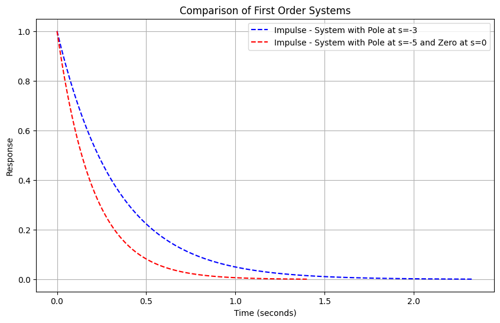
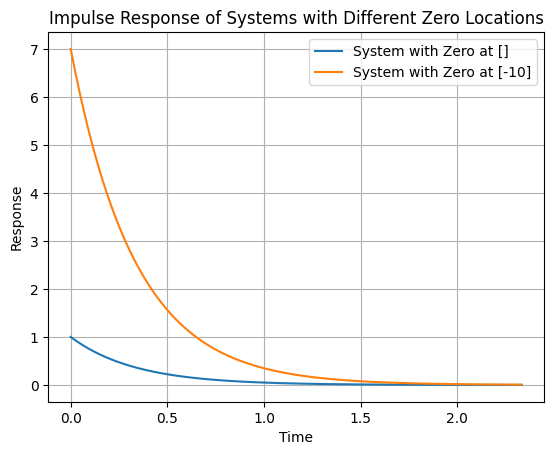

With this notebook we are going to explore more deeply the basic principles of feedback control. Recall our earlier discussions on the sensitivity and robustness issues in control systems. We will now delve into this with more detail.
Basic Block Diagram
We need to first lay out the basic block diagram. Here’s a description:
Controller has a transfer function designated as \(D\).
Plant is characterized by its transfer function, \(G\).
Disturbance to the plant is modeled through a transfer function \(N\), with an input \(w\).
Output of the system is \(y\).
The output \(y\) is fed back through a sensor with a transfer function \(H\).
An error detector is present in the loop.
The reference input to the system is \(r\).
This gives us the error signal $e$ and the control signal $u$.
Error signal, designated as \(e_{cap}\), and the control signal, represented as \(u\), are intrinsic parts of this diagram.
The relationship between the output \(y\) and the reference input \(r\) can be expressed as the ratio \(\frac{Y(s)}{R(s)}\). This relationship is denoted by \(M(s)\) and is given by the following equation:
This equation represents the overall transfer function of the closed-loop system.
Sensitivity Analysis
Sensitivity analysis in a control system determines how different parameters affect the system’s performance. Essentially, it gauges how sensitive the system response is to changes in the system’s parameters.
Sensitivity of M with respect to G
We earlier derived that the sensitivity of the overall transfer function \(M\) with respect to the plant transfer function \(G\), where \(G\) has parameters that may vary, is:
This equation gives the sensitivity of the overall function concerning the sensor transfer function, \(H\).
Conclusions from Sensitivity Analysis
From our prior notebooks (see 13_Principles_of_Feedback_Control), a few conclusions were made:
Loop Gain and Sensitivity to G: Increasing the loop gain (which is the product of transfer functions \(D\), \(G\), and \(H\)) reduces the sensitivity of \(M\) with respect to \(G\).
Sensitivity of the Open-Loop System: In an open-loop system (when the loop is broken), the sensitivity is unity, indicating high sensitivity to parameter changes in the plant.
\[ S^M_{G} = 1 \]
Impact on Sensor Selection
Increasing the loop gain makes the closed-loop system highly sensitive to parameter changes in the sensor ($H$).
Design Implication: Select robust and stable sensors (able to withstand environmental and other changes).
Trade-offs in Feedback Control
It’s essential to understand that while feedback control offers several advantages, there are trade-offs involved.
However, in a closed-loop system, this gain gets reduced due to feedback action. The advantage of using feedback control, primarily for robustness or sensitivity reduction, can sometimes lead to decreased performance in terms of dynamic shape or steady-state accuracy. It’s a balance that designers must strike.
The reduction in gain is a trade-off for improved sensitivity.
Design Implications
Given the loss of gain in feedback systems, there might be a temptation to introduce amplifiers or tweak components outside the feedback loop. However, this can introduce other issues. Changes or environmental effects on these components might directly impact the system’s output.
A more effective strategy might be to adjust the open-loop gain of the plant to account for this loss (e.g., increase the gain of the actuators in the plant) and have an output level that is acceptable.
In other words, a suggestion could be to use an amplifier to compensate for this loss. However, what if parameters of any external unit change? If an element, say temperature, changes and is outside of the feedback loop, the feedback strategy won’t account for the variations in this component. This leads to a direct impact on the system’s output.
To put it simply, while amplifying might seem like a simple solution, it doesn’t account for the intricacies and variabilities of real-world systems. Feedback loops help ensure stability and consistency in the face of such changes.
Conclusions - It is possible to adjust the plant $G$ to have a high open-loop gain to offset the feedback-induced loss.
If an external amplifier is used to compensate for the loss of gain, any parameter changes in this unit (not in the feedback loop) will directly affect the system output. This highlights the importance of adjusting the open-loop gain of the plant to ensure acceptable output levels post-feedback
The robustness or sensitivity reduction is often the primary goal of feedback action.
Feedback action’s primary goal is robustness or sensitivity reduction. You might achieve desired dynamic responses or steady-state accuracies in an open-loop system. However, real-world problems like robustness or sensitivity cannot be ignored. Feedback is thus essential, even if it complicates design.
🤔 Pop-up Question: Why might it be disadvantageous to introduce an amplifier outside the feedback loop?
Answer: Because any changes or environmental effects on the amplifier will directly impact the system’s output since the feedback strategy won’t account for these variations.
🤔 Pop-up Question: : What is the primary advantage of a closed-loop system over an open-loop system?
Answer: Closed-loop systems are more robust and less sensitive to external disturbances and parameter variations compared to open-loop systems.
🤔 Pop-up Question: How does feedback control compare to open-loop control in terms of steady-state accuracy and dynamic response?
Answer: While open-loop control might sometimes offer better performance for dynamic response and steady-state accuracy, it lacks the robustness and sensitivity reduction provided by feedback control.
Disturbance Rejection
In a feedback system, disturbances can affect the output. The system’s ability to reject these disturbances is crucial.
This equation clarifies the system’s behavior in response to disturbances.
If the loop gain \(D(s) G(s) H(s)\) is high, the effects of the disturbances are reduced
In essence, the higher the loop gain, the more the system can filter out disturbances. However, increasing the loop gain has its own set of challenges, especially when considering the noise in the system.
If \(H(s)=0\) (no sensor), the disturbance rejection is not possible. All the disturbances that enter the plant will certainly show their effects on the output.
Note that in an open loop system (see graph below) the controller has no information on the disturbance and hance cannot counteract it.
Since disturbances are always present, this also means that feedback is necessary!
Additional comments - The loop gain has three parts \(D(s) G(s) H(s)\). - We cannot increase the loop gain increasing the gain of the sensor \(H(s)\). - Note that system is sensitive to sensor parameters, so sensor is fixed. - We also cannot change \(G(s)\) because this is the plan. - The only degree of freedom is \(D(s)\). - In those cases where we have the liberty of changing \(G(s)\) we need to be extra careful: - \(N(s)\) is the transfer function between the disturbance and the plant output (arrives at the summing junction with the output of the plan - see graph above -). This means that in reality \(N(s)\) is a function of the plant \(G(s)\). Changing the loop gain through \(G\) you might be increasing the effect of the disturbance on the plant also. - For us we will only change the loop gain through the controller design \(D(s)\).
Noise Filtering and Its Challenges
The feedback system introduces a potential challenge: noise, especially high-frequency noise, often originating from sensors.
Let’s consider a feedback system with: - Controller Transfer Function: $D(s)$ - Plant: $G(s)$ - Output: $y$ - Noise Signal: $v$ (introduced at the sensor) - Unity Feedback for simplification
We introduce noise as soon as we try to measure the output \(y\).
\(v\) is a high frequency signal (noise)
Sensors are the main source of high frequency noise in the loop.
The transfer function $Y(s)/V(s)$ for the noise signal $v$ to the output $y$ is:
Which means that the noise signal is being injected directly into the loop.
We cannot achieve all the requirements only increasing the loop gain.
Adding a high-frequency noise filters
A common approach to tackle this issue is by introducing a high-frequency noise filter. This filter ensures that only relevant signals pass through while filtering out undesired high-frequency noise.
It is necessary to study the frequencies at play, the environment in which the sensor is installed and the effect of the environment on the sensor to then design or choose a suitable sensor filter.
🤔 Pop-up Question: : How does increasing loop gain affect the noise in the system?
Answer: Increasing the loop gain can amplify the noise, making it more prominent in the output.
Dynamic Response Shaping in Feedback Control Systems
Remember that we talk about shaping of dynamic response we are setting requirements on the transient and steady state response of the system.
For example, in notebook 13_Principles_of_Feedback_Control, we saw that we might want an oscillatory response or an overdamped response (depending on the application):
Shaping the Dynamic Response
Consider the transfer function of a closed-loop system:
The dynamic response of a system is significantly influenced by its poles and zeros.
Recall, the poles of a system determine the nature of the system’s response, such as oscillatory or non-oscillatory behavior, while the zeros affect the magnitude of these responses.
Transfer Function and System Poles and Zeros
Poles: They dictate the nature of the system’s response (oscillatory, non-oscillatory, first-order, second-order, etc.).
Zeros: Affect the magnitude of the response. For example, the zeros only affect the residue of the partial fraction expansion.
Example: - A first-order pole (e.g., $$) affects the speed of system response. - A zero affects the amplitude (\(A_1\)) of a specific mode in the response.
Example
Consider two impulse responses:
Fast Response: If \(\tau\) is small, the response quickly settles.
Slow Response: If \(\tau\) is large, the response takes more time to settle.
We can create graphs to show the impact of varying pole and zero values on a system’s response using Python, specifically with libraries like Matplotlib and SciPy.
Here’s a conceptual outline of how we might structure our Python code to generate these graphs:
Set Up the Environment: Import necessary libraries.
Define the Transfer Functions: Create functions to represent transfer functions with varying poles and zeros.
Simulate the Response: Use the step response function to simulate how the system responds over time.
Plot the Responses: Use Matplotlib to create plots showing the system’s response.
import numpy as npimport matplotlib.pyplot as pltfrom scipy.signal import TransferFunction, impulse, stepdef plot_responses(systems, title): plt.figure(figsize=(10, 6))for sys, label, color in systems: t_imp, y_imp = impulse(sys) t_step, y_step = step(sys) plt.plot(t_imp, y_imp, label=f'Impulse - {label}', linestyle='--', color=color)#plt.plot(t_step, y_step, label=f'Step - {label}', linestyle='-', color=color) plt.title(title) plt.xlabel('Time (seconds)') plt.ylabel('Response') plt.legend() plt.grid(True) plt.show()def print_transfer_function(sys, label): num, den = sys.num, sys.den tf_expression =' + '.join([f'{n}s^{len(num)-i-1}'for i, n inenumerate(num)]) tf_expression +=' / ' tf_expression +=' + '.join([f'{d}s^{len(den)-i-1}'for i, d inenumerate(den)])print(f'{label}: {tf_expression}')# User specified poles and zeros for first order systems# Example 1pole1 = [-3]zero1 = [] # No zeropole2 = [-5]zero2 = [] # No zero# Example 2# Compare what happens to the impulse response when we have the same pole but different zeros.# pole1 = [-5]# zero1 = [-1] # Zero in -1# pole2 = [-5]# zero2 = [-2] # Zero in -2# Creating transfer function systemssystem1 = TransferFunction(np.poly(zero1), np.poly(pole1))system2 = TransferFunction(np.poly(zero2), np.poly(pole2))print_transfer_function(system1, 'System 1')print_transfer_function(system2, 'System 2')# Plottingplot_responses([ (system1, 'System with Pole at s=-3', 'blue'), (system2, 'System with Pole at s=-5 and Zero at s=0', 'red')], 'Comparison of First Order Systems')
System 1: 1.0s^0 / 1.0s^1 + 3.0s^0
System 2: 1.0s^0 / 1.0s^1 + 5.0s^0

Sidebar - Effect of Zeros on Impulse Response
The behavior of the impulse response in a system with zeros is closely tied to the system’s transfer function, particularly how the zeros and poles interact. Let’s discuss why the impulse response starts from a negative number when you have a zero and how the location of the zero affects this behavior.
Impact of Zeros on Impulse Response:
In a transfer function, a zero essentially introduces a term in the numerator that can change the phase of the system’s response. When an impulse is applied, the immediate response of the system is influenced by the numerator of the transfer function.
If a zero is placed on the left-half of the s-plane (negative real part), it tends to introduce a phase shift that can cause the impulse response to start from a negative value.
Location of Zero and Response:
The effect of a zero on the impulse response is not just about its presence but also its location relative to the poles.
The closer the zero is to the origin (or to the pole), the more significant its impact on the initial response. However, the sign of the zero (whether it’s at -1 or 1) does not change the initial direction of the response. It’s the relative position of the zero to the poles that matters more.
Positive Starting Impulse Response:
To have an impulse response that starts from a positive number, you should place the zero in such a way that it doesn’t dominate the initial response of the system. This typically means placing the zero further away from the origin than any poles, particularly in a first-order system.
Understanding Through Experimentation:
You can experiment with the placement of the zero in your transfer function to observe how it affects the impulse response. Moving the zero further into the left-half plane (more negative) often reduces its immediate impact on the impulse response.
Here’s a quick Python experiment you can try to observe these effects. Adjust the zero2 value in the following code snippet to see how different placements affect the impulse response:
from scipy.signal import TransferFunction, impulseimport matplotlib.pyplot as pltimport numpy as npdef create_system(pole, zero):if zero: # If zero list is not empty numerator = np.poly(zero)else: # If zero list is empty, use a gain of 1 numerator = [1] denominator = np.poly(pole)return TransferFunction(numerator, denominator)pole = [-3]# Place zeros at different locations and observezero1 = [] # Zero at -1zero2 = [-10] # No zero# Creating transfer function systemssystem1 = create_system(pole, zero1)system2 = create_system(pole, zero2)# Generating impulse responsest1, y1 = impulse(system1)t2, y2 = impulse(system2)# Plottingplt.plot(t1, y1, label=f'System with Zero at {zero1}')plt.plot(t2, y2, label=f'System with Zero at {zero2}')plt.title('Impulse Response of Systems with Different Zero Locations')plt.xlabel('Time')plt.ylabel('Response')plt.legend()plt.grid(True)plt.show()

— END OF SIDEBAR
Feedback’s Role in Shaping the Dynamic Response
Consider the transfer function of a closed-loop system:
Shaping the dynamic response means making it different from the one in open loop.
The open loop response is driven by \(G_2(s)\), i.e., poles of \(G\). This means that the poles of \(G\) are not acceptable given your requirements.
Designing the Controller for Desired Dynamics
Objective: Alter the closed-loop system’s poles to achieve a specific dynamic response.
Strategy: Adjust the controller ($D_1$ and $D_2$) to achieve desired pole locations for $M(s)$.
We can change $D_1$ and $D_2$ so that the roots of the denominator \(D_2 G_2 H_2 + D_1 G_1 H_1\) are in suitable locations in the \(s\)-plane.
Design Problem
Goal: Translate a desired dynamic response into specific pole locations.
Steps: 1. Determine pole locations corresponding to desired dynamic response. 2. Design $D_1$ and $D_2$ in the controller to realize these pole locations in the closed-loop system.
Suppose you would like to have this dynamic response:
The design strategy would be to place the poles where we can achieve the desired response. Through the design of \(D(s)\) of the controller, we will be able to move the poles of the close loop system to desired location so that the dynamic response is what we want.
Shaping the dynamic response is possible suitably designing the controller (and hence the numerator and denominator) so that the closed-loop poles of \(M(s)\) are those of the required dynamic shape.
🤔 Pop-up Question: Why can’t we achieve desired dynamics through open-loop control? Answer: While open-loop control can theoretically achieve desired dynamics (placing the poles where we would like), it lacks the ability to adapt to changes in the system parameters over time, leading to potential instability and degraded performance.
The Limitations of Open-Loop Control in Dynamic Shaping
The poles of \(G(s)\) are not acceptable, they do not give us the desired response. We would like to move the poles where they give us the response we want.
Open-Loop Control Strategy
Idea: Cancel the poles of $G(s)$ and replace them with desired poles.
Implementation: Design $D(s)$ such that it cancels the poles of $G(s)$ and introduces the prescribed poles.
\[
D(s) = \frac{1}{G(s)} \times \hat{D}(s)
\]
Where \(\hat{D}(s)\) has the desired poles, for example:
\[
\hat{D}(s) = \frac{1}{s^2 + 2\xi\omega_n s + \omega_n^2}
\]
In this case,
\[
\frac{Y(s)}{R(s)} = \frac{1}{s^2 + 2\xi\omega_n s + \omega_n^2}
\]
Which is exactly want we want.
This is the most obvious way to achieve our objective. However, we never go for this solution…why?
Challenges with Open-Loop Control
Model-Plant Gap: The controller designed based on $G(s)$ might not effectively cancel the actual physical plant’s dynamics. We can only use a model and hence we have inaccuracy, so the dynamics of the plant will never be nullified. The cancellation is only possible with respect to the model and not to the plant. Also, since there is no feedback, there is no knowledge of this error at the controller.
Lack of Adaptability: The controller does not adapt to changes in the system parameters over time. If the plant changes over time (and it will) this might not be captured in the model, which means that the performance deteriorate over time.
Robustness Issues: Open-loop control is sensitive to disturbances and modeling errors, leading to potential instability.
Despite the complexity, feedback control is preferred due to its ability to handle robustness and disturbance rejection. Adjusting the closed-loop poles, though challenging, is crucial for ensuring the system’s stability and desired performance over time.
🤔 Popup Question: Why is an open-loop controller, despite seeming straightforward, not often used for dynamic shaping? Answer: Open-loop controllers cannot adapt to the changing parameters of the actual plant over time, and any gap between the plant model and the actual plant can lead to performance issues and instability.
Steady State Accuracy in Feedback Control
Let’s consider a unity feedback control system, where the feedback factor is 1. In this system, the error signal, denoted as $e$, plays a critical role in determining the system’s performance.
Transfer Function and Error Signal
The transfer function $Y(s)/R(s)$ for our system is given by:
This equation shows how the steady state error relates to the input $R(s)$ and the system’s transfer function.
Case Study: Step Input Response
Let’s analyze a specific case where $R(s) = $ (a step input).
For a step input, the steady state error $e_{ss}$ becomes:
\[
e_{ss} = \frac{1}{1 + D(0)G(0)}
\]
Here, $D(0)G(0)$ represents the DC gain of the loop. This is the loop gain at low frequencies.
By designing the controller \(D(s)\) appropriately, we can manipulate this gain to reduce the steady state error, thereby improving steady state accuracy.
Increasing the loop gain we can obtain better steady state accuracy.
Comparison with Open-Loop Control
In an open-loop system, the error is: \[
E(s) = R(s) - Y(s) = R(s) - D(s)G(s)R(s) = R(s)\Big[ 1 - D(s)G(s) \Big]
\]
and hence the steady state error for a step input (\(R(s) = 1/s\)) can be expressed as:
\[
e_{ss} = 1 - D(0)G(0)
\]
where we have again applied the Final Value Theorem.
Interestingly, in open-loop control, it’s possible to completely eliminate the steady state error by setting $D(0)G(0) = 1$. However, this approach lacks robustness and disturbance rejection capabilities.
In closed loop we can obtain zero steady error only at the limit.
Concluding Remarks on Steady State Accuracy
We’ve seen that feedback control, primarily employed for its robustness and disturbance rejection qualities, also allows us to finely tune steady state accuracy. However, achieving the perfect balance between robustness, accuracy, and stability requires careful design and consideration of all system aspects.
High Loop Gain: Benefits and Challenges
High loop gain is a fundamental design tool in automatic control, but it comes with its own set of benefits and challenges.
Benefits of High Loop Gain
Sensitivity Reduction: High loop gain reduces the system’s sensitivity to parameter variations.
Disturbance Rejection: It enhances the system’s ability to reject external disturbances.
Steady State Accuracy: Increasing loop gain can improve the system’s steady state accuracy.
Challenges and Trade-offs
Noise Problems: High loop gain can amplify high-frequency noise, reducing the signal-to-noise ratio.
Saturation and Input Amplitude Constraints: Excessive gain might cause system components to saturate.
Stability Issues: A higher loop gain can make the system more oscillatory and prone to instability.
These trade-offs highlight the complexity of control system design. Achieving the right balance between these factors is essential for optimal system performance.
🤔 Pop-up Question: Why can’t we always use high loop gain to improve system performance? Answer: While high loop gain improves sensitivity, disturbance rejection, and steady state accuracy, it can introduce problems like noise amplification, system saturation, and stability issues. Thus, a balance must be struck in the design.
Need for Beyond Proportional Control
A simple amplification (gain) may not satisfy all control requirements (i.e., merely increasing the amplifier gain in the controller $D(s)$), might not meet all control requirements. Therefore, we need to explore additional control actions, namely derivative and integral actions.
Derivative and Integral Control
Derivative Control: Involves injecting a signal proportional to the derivative of the error into the loop.
Integral Control: Involves using the integral of the error signal.
These control strategies help address the limitations of proportional control, leading to a more robust and versatile control system.